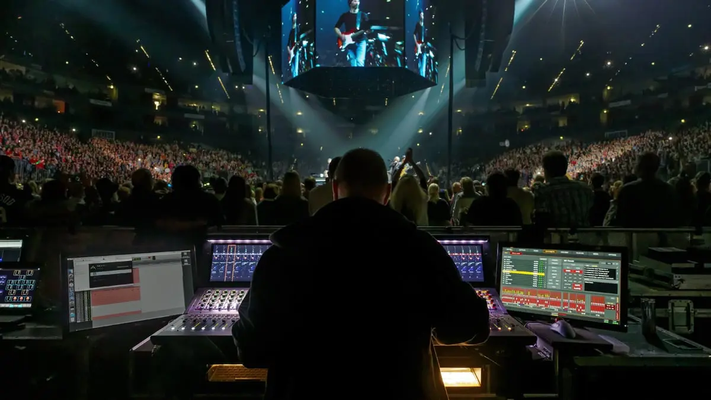
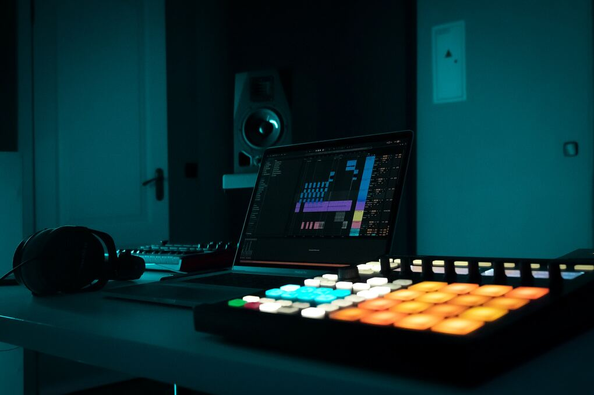

Conoce nuestros Servicios:
Insitu Live Audio

Brindamos equipos profesionales y personal especializado para cubrir todo tipo de eventos, desde conciertos y presentaciones en vivo hasta eventos corporativos, festivales y espacios privados. Contamos con roadies, stage managers, ingenieros de sonido y asistentes preparados para trabajar en cada etapa del montaje y la operación técnica. Tú pones el evento y nosotros nos encargamos de que el sonido esté a la altura de la experiencia que quieres ofrecerle a tu público.
Mezcla y Mastering
Tratamos cada canción con la atención y el cuidado que necesita para alcanzar un sonido profesional. Nuestro equipo de ingenieros trabaja en los procesos de mezcla y mastering buscando equilibrio, claridad, profundidad y una identidad sonora que represente la esencia de cada proyecto. Ya sea una producción musical, un sencillo o un álbum completo, llevamos tus canciones a un resultado listo para ser disfrutado en cualquier plataforma. (Visita nuestro portafolio aquí)
Insitu IA

Incorporamos herramientas de inteligencia artificial al proceso de producción y creación musical para ampliar las posibilidades de cada proyecto. Exploramos nuevas formas de trabajar con audio, edición, producción y diseño sonoro, utilizando la tecnología como una herramienta creativa que complementa el trabajo de músicos y productores. En Insitu IA buscamos aprovechar estas nuevas tecnologías sin perder de vista la intención artística detrás de cada proyecto.